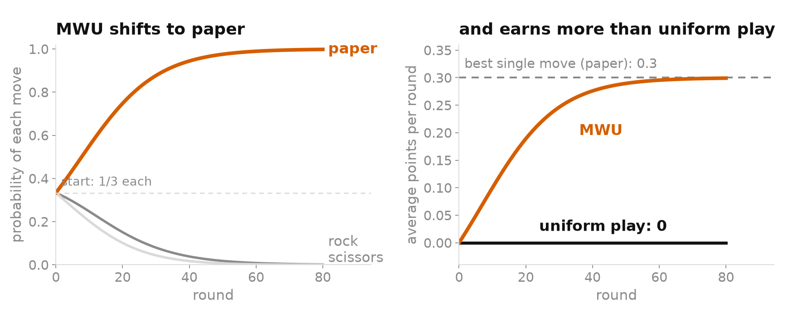
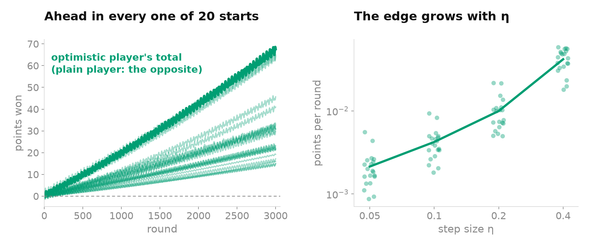

Never settling, yet always fair: Multiplicative Weights in Rock-Paper-Scissors
- The settingrock-paper-scissors, Nash equilibrium, the learning rule
- Why study itthe answer is known; what learners do on the way is not
- Three ways to playplain MWU, its average, optimistic MWU, and why the variants exist
- Same rule on both sidesanimation with step size and number of rounds
- Different rulesplain MWU against optimistic MWU
- What this teacheswhich rule to use in which case
- Referencesand the code
1. The setting
Take rock-paper-scissors. If you always play rock, I will notice and play paper. The only safe thing is to mix your moves unpredictably, one third each. Then nothing I do gives me an edge. A pair of strategies where neither player gains by changing theirs alone is called a Nash equilibrium. Here it is unique: both players play (1/3, 1/3, 1/3).
Now suppose the players know none of this. After each round, each one only learns what every move would have earned against the opponent's last play, its payoff: +1 for a win, 0 for a draw, −1 for a loss. The learning rule I look at is Multiplicative Weights (MWU, also called Hedge). Every move has a weight. After each round the weight of a move is multiplied by exp(η · payoff), so moves that would have won grow and moves that would have lost shrink, and this compounds from round to round. The weights are rescaled to sum to 1 and read as probabilities. The number η, the learning rate, says how hard the player reacts.
2. Why study it
The equilibrium of this game is known, and playing uniformly at random reaches it on the first move. So the goal is not to find 1/3. The game is a test tube: since we know the right answer, we can see what learners do when they do not. The question is what happens when two players who only see their own payoffs keep adapting to each other.
Real games are bigger: poker, auctions, markets, the two networks of a GAN. Nobody can write their equilibrium down, and rules of this family are used to approach it from payoffs alone. Two things then matter. One is whether the strategy actually being played settles down. In a real system what runs is the current strategy, and averaging past ones is often impossible (try averaging two neural networks). The other is how many rounds this takes.
Uniform play is also passive. It earns exactly 0 against anyone and never profits from a habit. That is the price of sitting at the equilibrium: it is safe, but it cannot exploit a player who strays from it, because exploiting means leaving it, and a player who leaves it can be exploited in turn. MWU takes that risk in small steps, and only as far as the payoffs justify. It knows nothing about the game and still ends up close to the best single move in hindsight: against an opponent who plays rock half the time, it finds paper on its own. Real opponents (a pricing bot, a trader, a poker player) have habits, so this is the case that matters.

One caveat: the guarantee is against the best fixed move. An opponent who changes habits halfway is harder, and MWU with a fixed η is slow to follow. I did not plot that case.
3. Three ways to play
Plain MWU is the rule above. Its update only reacts to the payoffs of the round that just ended, so it is always one step late. If the opponent has been playing a lot of paper, scissors did well, and MWU moves towards scissors. By then the opponent has moved on to rock. Both players chase each other round the triangle. The steps have a finite size, so each loop ends slightly further out than it started, and the strategy drifts towards the edge (Bailey & Piliouras, 2018).
The average of MWU is not a different player. It is the same sequence, averaged over time. The loops cancel out and the average goes to Nash, because over many rounds neither player can lose much compared with a fixed move. What is actually played is still the looping strategy, so this is a statement about the history, not about the play.
Optimistic MWU (OMWU) changes the rule itself. The exponent uses 2gt − gt−1 instead of gt, where gt is the payoff vector at round t. Read it as gt + (gt − gt−1): the latest payoff plus the change since the round before. With small steps, payoffs drift smoothly from one round to the next, so the next change should be close to the last one, and adding it gives a guess of the next payoff. The player reacts to where the opponent is going instead of where it was, which removes most of the lateness. The loops now shrink, and the strategy itself converges to Nash for small enough η (Daskalakis & Panageas, 2019).
The variants exist because each one repairs something different. Averaging fixes the numbers but not the play. Optimism fixes the play, at the price of remembering one more payoff vector and of a convergence result that needs a small η. If you can store the average, it is enough. If you deploy the current strategy, as a GAN does (Daskalakis et al., 2018), you want optimism.
| Exponent | What is played | In self-play | |
|---|---|---|---|
| Plain MWU | gt | current strategy | loops outwards, never settles |
| Its average | same as plain | current strategy (the average is only computed) | average goes to Nash |
| Optimistic MWU | 2gt − gt−1 | current strategy | loops inwards, converges |
4. Same rule on both sides
Two players use the same rule and start away from the centre. The animation shows player 1. Press Play, or move the sliders to change the step size and the number of rounds.
Both sliders are logarithmic. A small η gives a slow, wide spiral, so give it more rounds. A large η makes plain MWU reach the edge sooner. For optimistic MWU the theory needs a small η; in this run I checked numerically that it converges for η up to 0.5. The animation runs the same dynamics as the Python script, from the same start. Click a figure to enlarge it.
Plain MWU does not settle. The strategy spirals out to the edge of the triangle. The KL divergence to Nash, a measure of the distance between two probability vectors, grows at every round. In the default run it goes from 0.63 to 5.0 in 400 rounds, and one player ends up playing scissors 94% of the time. The average does settle. It is within 0.03 of (1/3, 1/3, 1/3) after 400 rounds, and in general within about η + 1/(ηT) of it. Optimistic MWU settles too, with no averaging: the KL divergence falls from 0.63 to 0.003.
5. Different rules
If the point is how learners adapt to each other, they should also meet learners that adapt differently. So I made plain MWU play against optimistic MWU, with the same η and the same starting points as above.
Neither of them settles at Nash. Both keep swinging between nearly 0 and nearly 1, like plain MWU does against itself. But the optimistic player comes out ahead. In this run it wins 68 points over 3000 rounds, while the same rule on both sides stays around 0, up to the swings of the loops. This is not an accident of the start: I tried 20 random starting points for each of η = 0.05, 0.1, 0.2 and 0.4, and the optimistic player finished ahead in all 80 runs. The gain is small, about 0.01 points per round at η = 0.2 (0.002 at η = 0.05, 0.04 at η = 0.4). It is also consistent with the guarantee above, since the plain player's loss stays well below the regret bound. My reading is the lateness again: the optimistic player answers where the plain one is heading, and the plain one answers where the optimistic one was.

6. What this teaches
Knowing the equilibrium and reaching it are different things. Two players who only see payoffs and react with the plainest rule circle the equilibrium forever, and a small change in the rule, counting the latest payoff twice, is enough to make them settle. Which rule to use depends on the situation:
| You know the game and want a safe strategy | Compute the equilibrium and play it. Nothing to learn, nothing to gain. |
| Unknown game or opponent, and you can keep the history | Plain MWU, and use its average. Simple, with a regret guarantee. |
| What you deploy is the current strategy (a GAN, a live policy) | Optimistic MWU with a small η. |
| The opponent keeps changing habits | Plain MWU with a fixed η follows slowly. Variants exist; I did not test them. |
Against a learner of another kind, optimism never lost in my tests, but it gained little. All of this is on a game with three moves and a unique equilibrium. The theorems come from the cited papers; here I only checked numerically that they hold.
References
- J. P. Bailey and G. Piliouras. Multiplicative Weights Update in Zero-Sum Games. ACM EC 2018.
- C. Daskalakis and I. Panageas. Last-Iterate Convergence: Zero-Sum Games and Constrained Min-Max Optimization. ITCS 2019.
- C. Daskalakis, A. Ilyas, V. Syrgkanis and H. Zeng. Training GANs with Optimism. ICLR 2018.
- Y. Freund and R. Schapire. A Decision-Theoretic Generalization of On-Line Learning and an Application to Boosting. JCSS 1997.
- S. Arora, E. Hazan and S. Kale. The Multiplicative Weights Update Method: a Meta-Algorithm and Applications. Theory of Computing 2012.
- M. Zinkevich, M. Johanson, M. Bowling and C. Piccione. Regret Minimization in Games with Incomplete Information. NeurIPS 2007.
![[Tweet image]](tweet.png){kind=link}